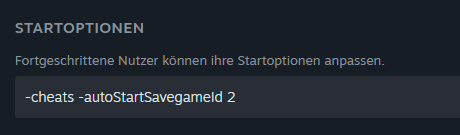

Home
Willkommen! Dies ist unsere Dokumentationsseite für LS-Modding und Lua-Skripting.
Auf dieser Dokumentationsseite kann man sich oben mit den verschiedenen Themen befassen und über die Links auf die einzelnen Seiten gehen.
Vorbereitung
Um automatisch in ein Savegame zu laden, kann man in den Startoptionen ein Autostart hinzufügen:
